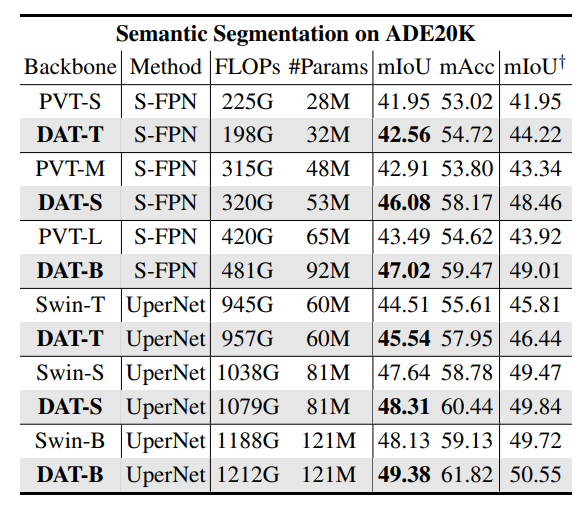

Vision Transformer with Deformable Attention
Contents
Vision Transformer with Deformable Attention#
Introduction#
Vision Transformer는 Training Data와 Model parameters의 사이즈가 클 경우에, CNN 모델과 비교하여 성능이 더 뛰어난 것이 입증되었고 receptive field의 사이즈가 크고 long-range dependencies를 모델링하는데 뛰어남
(a) 하지만 ViT는 각 Query 별로 Attention이 필요한 패치의 수가 많기 때문에 컴퓨팅 비용이 증가하고, 수렴속도가 느려지고, overfitting의 위험이 발생할 수 있음
ViT에서의 과도한 계산량을 줄이기 위해서 제안된 선행연구로 (b) Swin Transformer와 Pyramid Vision Transformer가 있음
(b) Swin Transformer : 전체 이미지가 windows로 분리되고, local-windows 내에서만 attention이 이루어짐
Pyramid Vision Transformer : 계산량을 줄이기 위해서 key와 value의 feature maps을 downsample함
(b) Swin Transformer와 Pyramid Vision Transformer 에서는 Attention 대상 영역이 줄어들어서 효과적이지만, attention patterns이 hand-crafted로 만든 것이고 데이터에 특성을 고려하지 않기 때문에 최적의 결과가 아닐 수 있음 (논문에서 관심대상과 연관있는 key와 value가 drop되고 덜 중요한 key와 value가 유지될 수 있다고 설명)
W-MSA는 Local Window 내에서의 Self-attention이고, SW-MSA를 통해 Local Window를 이동시켜 가면서 Self-attetion을 수행함
이상적으로는 주어진 쿼리에 대해서 후보 key의 value가 변형될 수 있고, 데이터의 특성을 고려하는 구조가 더욱 효과적인데 CNN 선행연구에서는 (c) Deformable Convolution Networks 연구가 있었음
하지만 해당 아이디어를 Vision Transformer에 그대로 적용시키기에는 메모리나 계산복잡도가 높은 문제가 있음
본 연구에서는 image classification과 다양한 dense prediction tasks에서 효과적인 (d) Deformable Attention Transformer (DAT) 방법을 제안함
DCN은 query별로 서로 다른 offset을 학습하지만 DAT는 query와 상관없이 동일한 offset이 학습됨
reference points들이 처음에는 모든 입력 데이터에서 일정한 간격을 가진 uniform grids로 생성이 되고
query feature를 입력으로 하여 데이터의 특성에 따른 offset이 생성이 되는데, 이러한 방식은 후보 key와 value가 중요한 영역으로 이동이 되어 기존의 self-attention module에 비해서 훨씬 유연하고 중요한 정보를 얻는데 더 효율적인 장점이 있다고 어필함
이미지 분류(ImageNet-1K Classification), 의미론적 이미지 분할(ADE20K Semantic Segmantation), 객체 인식(COCO Object Detection)에서 Swin Transformer와 비교해서 더 나은 성능을 보인다고 소개하고 있음
Deformable Attention Transformer#
1. Preliminaries#
ViT에서 flatten된 input feature map \(x ∈ R^{N\times C}\) 가 주어지면, M개의 heads를 가진 multi-head self-attention (MHSA) 블록은 아래와 같이 정의됨
(1) \(q = xW_q, k = xW_k, v = xW_v\)
(2) \(z^{(m)} = \sigma(q^{(m)}k^{(m)^T}/\sqrt{d})v^{(m)}, m = 1, ..., M,\) → m-th embedding output
(3) \(z = Concat (z^{(1)}, ..., z^{(M)})W_o ,\)
\(l\)-th Transformer block은 아래와 같이 계산되고, LN은 Layer Normalization
\(z^{'}_{l} = MHSA(LN(z_{l-1})) + z_{l-1}\)
\(z_l = MLP(LN(z^{'}_{l})) + z^{'}_{l}\)
2. Deformable Attention#
기존의 계층 구조 Vision Transformer로 잘 알려진 PVT와 Swin Transformer가 있는데, 다음과 같은 한계가 있음
PVT : downsampling 방법에서 정보 손실이 발생할 수 있음
Swin Transformer : receptive fields가 커지는 것이 느려서 큰 물체에 대한 모델링에서 제한이 있음
데이터에 의존적인 attention을 수행하는 Deformable Convolution Networks 방법이 있긴한데, Vision Transformer에 그대로 적용시키면 공간복잡도가 4제곱(biquadratic) 까지 커지는 문제가 있다고 함
Deformable DETR이라는 연구에서는 각 척도에서 Nk = 4로 더 적은 수의 키를 설정하여 오버헤드를 줄였지만, 정보 손실이 발생하는 문제가 있음
[3] Gcnet: Non-local networks meet squeeze-excitation networks and beyond.와[52] Deepvit: Towards deeper vision transformer.연구에 따르면 visual attention models에서 서로 다른 쿼리가 비슷한 어텐션 맵을 가지고 있는 것이 확인되어서, 이것에 착안하여 서로 다른 쿼리에서 같은 이동가능한 key와 value값을 가지도록 하였다고 함feature maps에서 중요한 영역을 통해서 토큰간의 관계를 효과적으로 모델링하기 위해서 논문의 저자들은 deformable attention 방법을 제안함
관심을 가지게 되는 초점 영역들은 offset network를 사용하여 query에서 학습된 변형된 샘플링 포인트의 여러 그룹에 의해 결정됨
feature maps에서 샘플 features을 추출하기 위해서 이중 선형 보간(bilinear interpolation) 방법을 사용하였고, 샘플 features들은 key와 value에 투영되어 변형된 key와 value 값을 얻을 수 있음
query 값과 샘플로 얻은 key값을, 일반적인 multi-head attention 모듈에 적용하여 변형된 값이 반영됨
deformable attention 학습을 더 용이하게 하기 위해서 변형된 포인트의 위치에서 relative position bias를 제공함
3. Deformable attention module#
입력 feature map \(x ∈ R^{H\times W\times C}\) 이 주어졌을 때, uniform grid of points \(p ∈ R^{H_G \times W_G\times 2}\) 가 생성됨
grid size는 계수 \(r\) 값을 사용하여 downsample 됨, \(H_G = H / r, W_G = W / r\)
reference points의 값은 2차원 좌표 \(\{ (0,0), ... (H_G -1, W_G -1)\}\) 로 표현되는데 이것을 normalize하여 [-1, +1] 범위의 값을 가지도록 함. (-1, -1)은 왼쪽 상단 코너 값이고 (+1, +1) 값은 오른쪽 하단 코너 값
reference points의 offset을 계산하기 위해 query tokens 값 \(q = xW_q\) 을 사용하고, offset network \(\theta_{offset}(·)\) 을 사용하여 offsets 값 \(∆p = \theta_{offset}(q)\) 을 계산함
training 과정에서 안정화를 위해서, 사전에 정의한 factor값인 \(s\) 를 사용하여 \(∆p\) 의scale 값을 조정함
\(∆p ← s\ tanh(∆p)\)
deformed points의 위치를 사용하여 key와 value의 sample이 계산됨
(6) \(q = xW_q, \tilde{k} = \tilde{x}W_k, \tilde{v} = \tilde{x}W_v\)
(7) with \(∆p = \theta_{offset}(q), \tilde{x} = \phi(x;p+∆p)\)
sampling function \(\phi(·;·)\)을 통해 이중 선형 보간(bilinear interpolation) 을 미분가능하도록 함
(8) \(\phi(z;(p_x, p_y)) = \sum_{(r_x, r_y)} g(p_x, r_x)g(p_y, r_y)z[r_y, r_x, :],\)
\(g(a,b) = max(0, 1 - |a - b|)\)
\((r_x, r_y)\)는 \(z ∈ R^{H\times W\times C}\) 에 있는 모든 위치를 indexing
함수 \(g\) 값은 4개의 integral points가 \((p_x, p_y)\)에 가까울 때만 0이 아니기 때문에 Eq.(8)을 4개 위치의 가중 평균으로 단순화함
기존 방식과 유사하게 multi-head attention에서 q,k,v 를 사용하면서 relative position offsets 값인 R도 함께 사용함
Attention head의 outptu값은 아래와 같이 계산됨
(9) \(z^{(m)} = \sigma(q^{(m)}\tilde{k}^{(m)^T}/\sqrt{d}+\phi(\hat{B};R))\tilde{v}^{(m)}\)
\(\phi(\hat{B};R) ∈ R^{HW \times H_GW_G}\) 는 Swin Transformer에서 사용한 position embedding이고, \(\hat{B}\)는 Relative Position Bias 값
\(z^{(m)}\) 값들은 Concat 된 뒤에 \(W_o\) 와 linear projected 되어서 Eq.(3)의 \(z = Concat (z^{(1)}, ..., z^{(M)})W_o\) 값이 계산됨
4. Offset generation#
Offset network는 query feature를 입력으로 각 reference point에 해당하는 offset value를 예측함
Offset Network는 Depothwise Convolution, GELU, 1x1 Convolution으로 구성됨
각 reference point는 local s x s region 안에서 shift됨
5. Offset groups#
deformed points의 다양성을 위해서 MHSA 처럼 feature channel을 G개의 group으로 분리함
각 group으로부터 나온 features들은 sub-network를 공유하고 각각 offsets을 생성함
Attention module의 head 개수 M 값은 그룹 개수 G의 배수이고, 여러개의 multiple attention heads에서 하나의 그룹에 변형된 key와 value값들을 할당함
6. Deformable relative position bias#
relative position bias는 모든 (query,key) 쌍의 상대적 위치를 encode하고 이를 사용하여 공간 정보를 attention에 반영함
H x W의 feature map이 있으면 상대 좌표의 위치는 [-H, H], [-W, W] 범위에 있음
Swin Transformer에서는 relative position bias table \(\hat{B} ∈ R ^{(2H-1)\times(2W-1)}\) 를 사용하여 relative position bias \(B\) 값을 계산함
이 연구에서는 deformable attention의 key값들이 연속적인 위치를 가지고 있어서 [-1, +1] 범위로 normalize 하였고, 가능한 모든 offset values를 다루기 위해서 parameterized bias table \(\hat{B} ∈ R ^{(2H-1)\times(2W-1)}\) 에서 \(\phi(\hat{B};R)\) 를 continous한 relative displacements로 보간함
출처: https://www.youtube.com/watch?v=hU7gP3u-tLQ
Reference points에서 Deformed points의 빼주어 차이를 구해준 뒤에 /2 연산을 해주면 Displacement가 생성이 됨
Displacement에서 Bilinear Interpolation을 수행해주면 Relative Position bias값을 얻을 수 있음
7. Computational complexity#
Deformable multi-head attention (DMHA)는 PVT나 Swin Transformer와 비슷한 computation cost를 가지는데, offset network 에 대한 computation cost이 추가 됨
\(Ω(DMHA) = 2HWN_sC+2HWC^2+2N_sC^2 + (k^2+2)N_sC\)
\(N_s = H_GW_G = HW/r^2\) 는 sampled points의 개수
offset network의 computational cost는 channel size (C)에 대해서 linear complexity하기 때문에 attention computation에 비해서는 작음
Swin Transformer 모델에서 image classification을 할 때, \(H=W=14, N_s=49, C = 384\) 일 때 1개의 attention module block의 computational cost는 79.63M FLOPs 인데, k=5로 설정한 deformable module의 computation cost는 5.08M Flops로 전체 모듈의 6% 정도 밖에 되지 않음
값이 큰 downsample factor r 값을 사용하면 complexity가 감소하여 고해상도 이미지에서의 object detection이나 instance segmentation에서도 적합함
Model Architectures#
vanilla MHSA에 deformable attention을 적용하여 deformable vision transformer block을 구축
Deformable Attention Transformer 는 아래 선행 연구들과 유사한 pyramid structure를 사용하여 multiscale feature maps이 필요한 다양한 visoin task에서 적용될 수 있음
[7] Dpt: Deformable patch-based transformer for visual recognition.[26] Swin transformer: Hierarchical vision transformer using shifted windows.[31] Bottleneck transformers for visual recognition.[36] Pyramid vision transformer: A versatile backbone for dense prediction without convolutions.
입력 이미지의 shape는 H x W x 3이고
stage1 이전에 stride가 4인 4x4의 non-overlapped convolution을 이용하여 H/4 x W/4 x C shape의 patch embedding을 얻음
다음 단계의 stage 이전에 stride가 2이고 2x2의 non-overlapped convolution을 이용하여 feature map의 spatial size를 절반으로 줄이고 channels 수가 2배로 증가함
Classification Task 에서는 마지막 stage의 feature maps을 정규화 하고, linear classifier를 사용하여 pooled features에서 logits을 계산함
Object detection , Instance segmentation, semantic segmentation tasks 에서는 DAT 모델이 multiscale features를 추출하기 위한 backbone 역할을 함. Object Detection에서 사용하는 FPN이나 Semantic segmentation에서 사용하는 decoders에 입력으로 넣어주기 전에 DAT의 각각의 Stage에서 구한 features에 대해서 normalizatoin layer를 추가함
모델 용량(model capacity)와 계산 부담(computational burden)을 줄이기 위해서, 처음의 Stage 1,2에서는 Swin-Transformer의 Shift-Window Attention을 사용하고, Stage 3,4에서 Deformable Attention(앞에서 구한 local augemnted tokens의 global relations를 모델링)을 사용함
처음 두 단계(Stage 1,2)에서는 local features들이 학습되기 때문에 deformable attention이 선호되지 않음
처음 두 단계(Stage 1,2)에서는 key와 value의 spatial size가 크기 때문에 deformable attention을 사용했을 때 dot products에서의 overhead 계산량과 bilinear interpolations 계산량이 많아짐
다른 모델과의 비교를 위해서 3가지의 DAT Architecture를 구축하였음
\(N_i\) : stage \(i\) 에서의 block의 개수
\(C\) : Channel의 dimension
\(window\ size\) : Region size in local attention module
\(heads\) : Number of heads in DMHA
\(groups\) : Offset groups in DMHA
Experiments#
1. ImageNet-1K Classification#
Training 1.28M images, Validation 50K images
AdamW, 300epochs with cosine learning rate decay
DeiT의 augmentation setting 사용 (RandAugment, Mixup, CutMix)
DAT-T, DAT-S : 224 x 224 resolution, DAT-B : 384 x 384 resolution
Result
모델 Size가 Tiny(T), Small(S), Base(B)일 때 DeiT, PVT, GLiT, DPT, Swin Transformer들과 성능을 비교하면 FLOPs는 소폭 증가하지만 Top-1 ACC.에서 다른 모델들에 비해 좋은 성능을 보임
2. COCO Object Detection#
Training 118K images, Validation 5K images
Pretrained model : Model trained ImageNet-1K
DAT를 backbone으로 RetinaNet, Mask R-CNN, Casecade Mask R-CNN 구조와 성능 비교
ImageNet pretrained(300 epoch) model 사용
Results : DAT를 Backbone으로 하고 아래 모델들을 통해 Object Detion Task에 수행함
RetinaNet
Mask R-CNN
Casecade Mask R-CNN
3. ADE20K Semantic Segmentation#
Training 20K images, Validation 2K images
Pretrained model : Model trained ImageNet-1K
DAT를 backbone으로 SemanticFPN, UperNet 구조에서 성능비교
Learning rate schedules와 training epochs는 Swin Transformer, PVT와 동일
Result

4. Ablation Study#
Ablation Study는 DAT-T 일 때 의 추가 실험 결과
Offset, relative position embedding 사용 효과 확인
Deformable attention 위치(stage)에 따른 비교
Maximum offset size(s)에 따른 비교
offset을 계산할 때 각 reference point는 s x s region 안에서 shift 될 수 있음
Training의 안정화를 위해서, offset을 계산할 때 \(∆p ← s\ tanh(∆p)\) 와 같이 s(Maximum offset size)라는 hyperparameter를 곱해주게 되는데, s값의 변화에 따른 성능비교
값이 2일 때가 성능이 좋고
5. Visualization#
COCO Validation set에 대해서 Attention Weight 스코어가 높은 point들을 시각화 한것

Stage3(첫번째 행), Stage 4(두번째 행)에서의 deformed points 이고 타겟 대상에 가까울 수록 deformed points들이 뭉쳐있는 것을 확인할 수 있음
DAT(위쪽)과 Swin Transformer(아래쪽)을 비교한 것으로, DAT는 타겟 대상에 대해서 전반적으로 Attention 이 global하게 퍼져있는데, Swin Transformer는 대상의 local한 부분만 보거나 다른 영역이 Attention으로 잡히는 한계가 있음
Conclusion#
제안하는 Deformable attention transformer(DAT)는 image classification이나 dense prediction tasks에 잘 적용될 수 있다.
DAT는 sparse한 attention 패턴을 data-dependent한 방법으로 배울 수 있다.
Image Classification에서는 top-1 accuracy에서 동일한 baseline의 Swin Transformer와 비교했을 때 0.7만큼의 차이
Object Detection에서는 box AP와 mask AP에서 1.1만큼의 차이
Semantic Segmentation에서 1.2 mIoU만큼의 성능 차이가 나는 것을 실험을 통해 확인함
Author by 박민식
Edit by 김주영